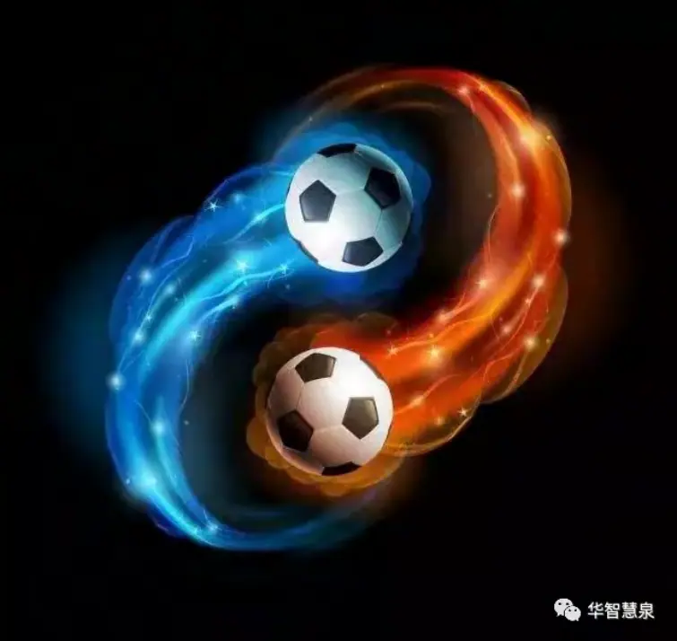
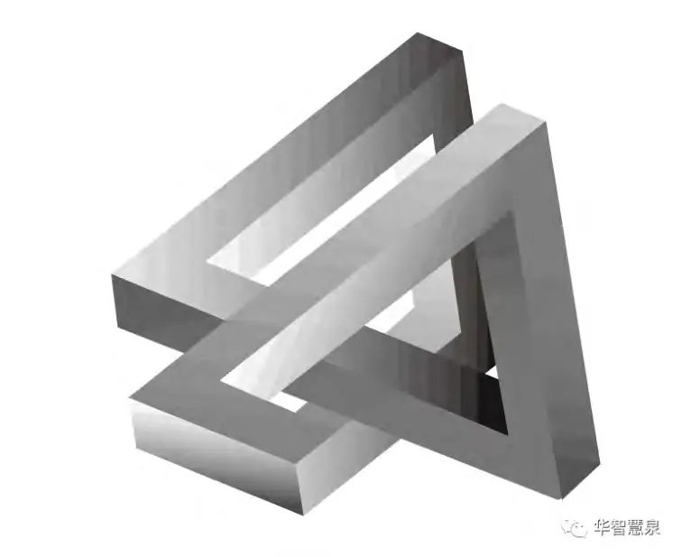

——从SIO本体论与意义三律视角出发的本体批判
摘要
本文旨在从主客互动本体论（SIO Ontology）与意义三律理论体系（幸福律、自由律、特征律）出发，对当代广泛流行的“主体性中心创造力论”进行本体论与语言哲学的系统性解构与批判。该主流观点普遍认为，“创造力”是一种存在于个体主体之内的内在属性或心理能力，是可以被“拥有”、“培养”、“使用”并加以“发挥”的潜在资源。这种观念深入根植于教育体系、心理测评、管理咨询、人才选拔乃至哲学人类学之中，构成了现代社会对“创新”的基本认知框架。
然而，本文指出：这种“创造力归属于主体”的观念体系，实则建立在一系列未经验证的本体幻觉之上，其中包括：
主体的先验实存性：预设一个独立、自足、稳定不变的“自我”存在为本体；
创造力的物化属性：将创造力误解为一种可内化、可储存、可调用的“能力对象”；
互动结构的附庸地位：忽略了主体只能在主-客-互动结构中生成与展开的事实，把创造行为误读为主体单方面的“对客体加工”。
本文借助SIO本体论提出的核心命题——“存在即SIO结构”，指出：任何创造行为的发生，皆源于一个张力足够深、路径开放充分、混沌容忍度较高的SIO结构系统中的动态生成过程。所谓的“创造力”，并非源自主体的某种内在稳定资源，而是一个SIO结构在意义三律共同作用下呈现出的结构性涌现现象（structural emergence）。这是一种互动性的、分布式的、系统运行导向的生成结果，而非某个人“固有能力”的体现。
更进一步地，本文揭示“创造力的主体归属说”本质上是一种语言映射幻觉。在大量创造事件中，特征律的持续运行使得某些SIO结构中的“主位”（即语言主语位置）频繁出现，语言表达习惯将其固化为“同一主体”，由此在语言和认知系统中形成了所谓“有创造力的某人”这样一种同一性S投影幻觉。这不仅遮蔽了创造行为的真实结构生成路径，也造成了教育误导、精英神话、制度设计偏误等一系列认知与实践上的偏差。
因此，本文主张：我们应当从根本上超越“主体拥有创造力”这一语言结构所制造的哲学迷雾，将创造力还原为结构生成论意义上的系统性过程。创造力不是“谁拥有”，而是“哪里生成”；不是“个人之才”，而是“结构之生”。
唯有如此，我们才能真正把创造力从天赋崇拜、心理属性、智力特质的幻觉中解放出来，使其回归为一种可结构、可训练、可协作、可生态生成的文明能力。这不仅有助于重新定义教育的目标、人才的发展路径、制度的设计逻辑，更为人类文明从技术主义转向意义生成型社会提供了坚实的本体论基础。
一、引言：创造力到底是谁的？
“他是个天才，拥有超强的创造力。”
“我想培养孩子的创造力。”
“企业要招更多有创造力的人才。”
这些语句看似平常，出现在教育、职场、心理学、管理咨询的每一个角落，被我们反复使用、认同、甚至塑造制度与资源分配机制。但正是在这些语句中，隐藏着一个根深蒂固、未经检视的哲学预设：
创造力是一种主体的“固有属性”或“内在能力”。
我们称这种普遍信念为：“ 主体性中心创造力论（Subject-Centered Theory ofCreativity）”。
这一观念建立在一种看似无懈可击的叙事链条上：
主体预先存在，具有某种天赋或能力（如创造力）；
创造力可以被拥有、培养、发挥；
主体凭借创造力，去加工世界、改造结构、生成作品；
成果可归属主体本身。
这条逻辑链条的确非常具有直觉魅力，它使创造行为看上去可以被清晰归因、便于评价，也易于组织社会叙事：奖学金、职称、荣誉、甚至神话——都可以围绕“谁最有创造力”而展开。
然而，这一看似自然的逻辑，真的可靠吗？
从主客互动本体论（SIO Ontology）与意义三律哲学的角度看，这种观点实际上建立在一系列未经审视的幻觉基础之上，尤其是：
1. 主体的先验实存性：将“主体”视为一个先在的、自足的本体，脱离关系地“拥有能力”；
2. 创造力的实体化误导：将创造力从“结构生成的功能性表现”转化为“可内属、可调用的心理资源”；
3. 语言结构的误投：主谓宾句法将创造行为简化为“主体—拥有—能力”的静态配置；
4. 结构遮蔽的认知失误：忽视了创造行为真正所依赖的，是一个具体且复杂的主—客—互动网络（SIO结构）。
换言之，“创造力属于主体”这句话的哲学前提是错位的，它是一种语言投影幻觉，一种认知压缩误差，也是一种本体论上的逆向错误归因。
1.1 主体先在，能力归属：逻辑魅力背后的迷雾
为什么“主体拥有创造力”这一说法如此具有吸引力？
根源在于，它符合我们从语言、文化、教育中形成的主语中心世界观。我们习惯于认为：
某个“我”是先天存在的核心；
“我”拥有能力；
然后“我”去做事，表现出行为；
再将行为与“我”建立直接归属。
这是“主语本体论”，也是西方传统哲学和人文教育的深层结构。亚里士多德将“潜能”视为实体属性，康德设定“先验主体”作为知识生成的起点，心理学也将能力归于“大脑结构”或“人格差异”。
但正是在这种主语中心世界观中，“创造行为的真正生成机制”被掩盖了。
1.2 主体并不孤立：SIO本体论的挑战
根据主客互动本体论（SIO Ontology），任何“存在者”都不是孤立主体或客体，而是一个包含三元素的复合体：
SIO = 主体（S）+ 互动（I）+ 客体（O）
在这一模型中，主体并非起点，而是结果。主体感、行动感、创造性，都是在特定SIO结构中通过张力感知、路径生成、互动反馈不断构成的。
所以，创造行为不是“我用我的创造力去创新一个结构”，而是：
在一个张力场中，某个SIO结构被迫组合出新的互动模式，在混沌反馈中形成结构性特征涌现，这一涌现在语言中被“归属”给了主体。
主体并不拥有创造力，主体是创造行为中语言投影的副产物。
1.3 语言投影机制：我们如何误以为“他有创造力”
语言结构是制造幻觉的关键媒介。
“爱因斯坦创造了相对论。”
“乔布斯发明了iPhone。”
“莫奈开创了印象派。”
在这些语句中，主语总是“人”，谓语是“创造、发明、开创”，宾语是“理论、产品、风格”。
但真实过程远不止此：
爱因斯坦的相对论，是在张力极大的物理学分裂时期；
乔布斯依赖数百人的团队、资本、系统、平台、反馈系统；
莫奈的画风，是在艺术学院的排斥与自然光实验中反复试错产生的。
真正的创造行为，是在多个SIO结构中反复发生、演化、筛选、失败与涌现出来的结构组合现象。
而我们之所以认为“这是某个人的创造力”，是因为：
语言在表达这些结构生成事件时，需要一个主语，便将频繁出现在多个SIO结构主位的那个人固定为“创造者”。
这种语言上的“同一性S投影”机制，让我们将结构生成性事件误认为是个体拥有的能力的体现。
1.4 问题后果：精英崇拜、教育误导、制度偏差
当我们坚持“创造力属于主体”的观点时，我们进入了一个极其危险的认知闭环：
我们开始相信“有创造力的人”和“没创造力的人”是天生注定的；
我们的教育只关注少数“聪明的孩子”，忽视结构生成机制的普遍性；
我们在制度设计上更关注“吸引人才”而非“生成结构空间”；
我们忽略了创造行为真正的生态、互动、组织条件，而将一切归因于“个人”；
我们对失败的解释也从“结构无法承载”简化为“人不够好”。
最终，“创造力”变成了一场天赋神话，而不再是一个可以被生态支持、被组织培育、被结构激发的文明能力。
1.5 本文目标：走出幻觉，重构结构
因此，本文提出并展开的核心目标是：
打破“创造力是主体固有属性”的幻觉，
还原创造力为：SIO结构在意义三律下所生成的结构涌现机制。
换句话说：
不是“谁拥有创造力”，而是“哪些结构能够激发创造力”；
不是“人决定创新”，而是“结构组合、张力激活、路径自由、特征律运行”决定创新；不再追问“谁更聪明”，而要建构“什么样的SIO系统更有生成性”。
这场解构，不只是哲学语言的精修，
更是教育革命、制度更新、文明自觉的前提。
二、主体中心创造力观的三大前设及其问题
——与哲学、心理学的对话与重构
创造力，是我们赋予人类极高价值的能力词汇之一。它既是个人评价的核心，也是社会制度构建的目标。然而，在创造力的主流认知中，始终存在着一个“公认而未觉”的前提结构，即：创造力属于主体，是主体的固有属性。
本文称这种视角为“主体中心创造力观”，它以三大哲学前设为基础：
1. 主体的先验实存性；
2. 创造力的“拥有性”属性；
3. 主体-对象的工具化结构观。
下面将逐一展开，并分别与哲学传统、心理学理论及SIO本体论进行系统对话与批判。
2.1 主体的先验实存性
一、“先验主体”观念的哲学源头
主体是创造力的承载者——这一观念最早可以追溯至笛卡尔式的“我思故我在”，其后由康德在其《纯粹理性批判》中系统化。康德认为，经验必须由先验结构组织，而“先验统觉”即是将多样经验统一为一个“我”的中心机制。
这意味着，“主体”是认知的起点，是经验之可能的条件。于是，在康德逻辑下：
主体是实存的、稳定的、统一的；
创造力作为高级认知能力，自然被归入主体之内；
主体可以拥有创造力，如同拥有判断力、想象力、意志力。
这种先验论视角深刻影响了后来的现代心理学和教育哲学。即便到了20世纪，胡塞尔的现象学“意向性结构”依然强调主体对客体世界的“指向性主导性”。
二、SIO本体论的批判：主体是生成的，不是起点
SIO本体论根本性地拒绝“主体先于互动而存在”的假设。根据SIO视角：
任何存在，不是孤立的“主体”或“客体”，而是由主（S）、客（O）与互动（I）所构成的三元结构复合体。
在这种结构中：
主体是不断“被互动生成出来”的；
主体性不是“本体起点”，而是“结构发生中的一种阶段性自觉形式”；
主体感只能在SIO结构中被定位、被反馈、被识别。
换句话说：
“主体”不是创造的前提，而是创造行为过程中的副产品之一。
这与后现代哲学中的“主体解构”思想相契合，例如：
福柯强调“主体是权力网络中的产物”；
德里达认为“自我”是语言结构的错位投射；
拉康则指出“主体是在他者话语中诞生的”。
但SIO本体论进一步指出：
主体不仅是语言构造；
更是结构系统（SIO）中，在特定张力与路径关系下生成的逻辑节点。
因此，预设“一个拥有创造力的主体”，等同于在一张空白画布上画出一座房子，然后断言：“这是自然长出来的。”——这是一种经典的逆向本体推理错误。
2.2 创造力的“拥有性”属性
一、心理学中的“能力论”传统
创造力作为一种“可拥有的能力”这一观念，在20世纪心理学中被系统建构起来。其代表人物包括：
吉尔福特（J.P. Guilford）：将创造力定义为“发散性思维”能力；
加德纳（Howard Gardner）：在“多元智能理论”中，把创造力视为“某种类型的智力组合表现”；
斯滕伯格（Robert Sternberg）：提出“智力-知识-动机”的整合模型，把创造力归为个体内部的多元能力协调结果。
这些理论有其应用价值，尤其在测量、教育干预、人才培养中。但问题在于：
它们都将“创造力”视为“可度量、可内部化、可归属主体”的某种稳定能力。
这等于将创造力从动态生成结构简化为静态能力属性，并抽象脱离了互动情境、张力结构与结构约束机制。
二、SIO结构观：创造力不是能力，而是结构行为
SIO本体论与意义三律指出：
创造力不是一个实体属性，而是一种结构性行为。它表现为：\n\n- SIO结构在张力驱动下展开自由路径组合；
结构内部通过混沌状态进行互动重组与反馈；
最终在特征律中呈现出“可识别、可复制、可演化”的新结构。
我们所说的“有创造力的表现”，其实是：
某个SIO结构在意义三律运行中成功完成了一次结构跃迁。
而“主体”在其中，只是这一生成行为的一个“语言焦点”。我们说“他有创造力”，其实是：
“在这些结构性事件中，他频繁处于S位，被语言映射为主语”。
2.3 主体-对象的工具化结构观
一、西方创造论的基本模式：主体—手段—目标
从亚里士多德的“技艺逻辑”到现代工程观，西方思想普遍采纳“创造即加工”的隐喻：
主体（我）→ 使用手段（技术/能力）→ 改变外部对象（自然/制度/他人）
这一图式构成了从牛顿物理学到近现代工业体系的“创造话语核心”：
创造是主体去征服自然、改造世界的过程。
即便是在当代设计思维、用户体验研究、创新管理中，这种“以人为中心”的主导话语仍然强烈。
二、SIO的挑战：世界不是“被加工”的，它是“被生成”的
主客互动本体论指出：
世界不是由主体去改变客体而来的，而是由SIO结构之间的互动不断自组织、自演化生成的。
在创造行为中：
主体并非操作中心，而是系统中一个被动—能动交替的张力位点；
客体也并非“材料”，而是在互动中重新定义；
真正的创造，是S、I、O三者同时被重组、再定义的生成行为。
例如：
艺术创作中，画家不只是“画出”风景，而是在“视觉—材质—感知”三元中，重新组织表达路径；
教育改革中，教师不只是“传递新方法”，而是在“学生张力—知识对象—教学互动”三元中，重构SIO节奏；
社会运动中，倡议者不只是“推动改变”，而是在“制度张力—语言媒介—公民意识”之间创造新结构回路。
2.4 总结：必须彻底放弃“拥有—使用—对象加工”模式
| 主体中心观前提 | SIO哲学批判 |
|---|---|
| 主体预先存在 | 主体是结构运行中生成的 |
| 创造力可被拥有 | 创造力是结构运行的生成能力，不可归属 |
| 主体使用创造力去创造世界 | SIO结构在互动中自组织生成新结构 |
换句话说：
创造不是“谁拥有能力去做”，而是“什么结构正在生成新的连接”。
我们必须从“主体式创造观”转向“结构生成论创造观”，从而为真正的创造力解放提供哲学地基、社会结构与生态容器。
三、创造力的结构性重建：SIO生成论视角
——从个体归属性到结构生成性的范式转向
3.1 前言：从“谁拥有”到“哪里发生”的认知革命
在前一章我们已经指出，“主体拥有创造力”的观点，是一种源于语言结构、认知惯性和本体误读的哲学幻觉。创造力并非某人所“拥有”的能力，而是某种特定条件下主-客-互动结构（SIO）中动态生成的行为现象。
那么，创造力到底是什么？如何定义？如何判断？我们如何从“本体结构”出发重建一个新的创造力理解框架？
这一章，我们将系统提出一种SIO结构生成论创造力模型，在其中：
创造力不再是心理属性，而是结构能力；
创造行为不再是个体才能，而是系统运行状态的表现；
创造主体不再是本体起点，而是语言对结构中主位的临时投影结果。
3.2 创造力的SIO结构定义：从能力到发生机制
A. 正式定义
创造力是：某一主-客-互动（SIO）结构在特定张力条件下，通过自由路径的探索、混沌状态的反馈与筛选、以及特征律的稳定运行，自组织生成出新的、可识别、可重复、可传播的结构性模式的能力。
该定义与传统“能力定义”截然不同，它不是描述某种“归属”，而是揭示一种“发生机制”。下面我们逐一解析其核心要素：
B. 要素拆解
| 要素 | 含义说明 |
|---|---|
| SIO结构 | 创造行为的本体场，不是某个主体或对象，而是S（主体）、I（互动）、O（客体）三元系统 |
| 张力条件 | 幸福律受阻，引发系统需要重新组织以释放压迫或冲突 |
| 自由路径探索 | 自由律激活，系统开始在多路径空间中展开组合尝试 |
| 混沌反馈与筛选 | 结构进入不稳定性、尝试性与突变可能的状态，同时自组织出潜在新结构 |
| 特征律运行 | 新结构稳定下来，获得可识别性、可重复性与传播能力 |
| 结构性模式 | 创造的成果不是“内容”，而是“结构”：新的组合方式、互动逻辑、系统功能 |
因此，创造不是一件事情、一个产品或一个天才的行为，而是一种SIO结构的成功演化过程。任何创造现象的背后，都是一个运行良好的生成系统。
3.3 三律模型：判断创造力的结构条件
我们必须从传统的“输出判断”（成果、灵感、原创性）转向过程判断。也就是说：不是看“结果是否新”，而是看“生成是否合理、完整、稳定”。
为此，我们引入意义三律（幸福律、自由律、特征律）作为创造力判断的三大机制：
| 法则 | 结构性判断标准 |
|---|---|
| 幸福律 | 系统是否处于张力释放状态？即：结构中是否存在未解冲突，且此冲突可通过生成机制被有序转化？ |
| 自由律 | 系统中是否存在多路径尝试空间？结构是否具备反馈回路、变异能力、组合可能性？ |
| 特征律 | 所生成结构是否具有稳定性？是否可以被识别、复制、传播？是否形成了某种结构特征而非偶然异动？ |
A. 幸福律：张力激活机制
幸福律是创造力发生的“启动装置”。如果一个SIO结构完全无张力，系统便会停滞、惯性运行，不具备生成性。创造行为往往发生于：
矛盾场（理念冲突、系统瓶颈）；
不适场（情感困顿、需求缺失）；
挫败场（路径失败、秩序崩解）。
B. 自由律：路径变异机制
自由律是创造行为的“展开装置”。自由并非主观选择权，而是结构允许试错、变形、重组的能力。自由律运行的场域，必须具有：
组合可能性（跨界、转化、延展）；
反馈敏感性（响应细微变化）；
非线性结构（涌现与反馈的网络状态）；
容错机制（允许失败而不立即惩罚）。
C. 特征律：结构落地机制
特征律是创造力的“完成机制”。即便张力与自由存在，如果结构最终无法定型、无法被识别、无法传播，它也不能称为“创造”。特征律保证：
创造行为可被他者理解；
结构成果可被实践应用；
系统模式可被再现或演化。
一个没有特征律的“创造”只是一次情绪爆发，而不是文明建构行为。
3.4 创建行为的全周期结构图
我们可以将SIO结构中的创造行为全过程总结为以下五阶段：
| 阶段 | 描述 | 对应三律 |
|---|---|---|
| 张力生成 | 系统遭遇冲突、瓶颈、不适，幸福律受阻 | 幸福律（受阻） |
| 路径尝试 | 系统释放自由度，尝试组合新元素、新路径 | 自由律（激活） |
| 混沌过渡 | 系统暂时进入无序、高变状态，旧结构失效，新结构未稳定 | 自由律 + 特征律（过渡） |
| 特征筛选 | 某些组合模式获得反馈成功，逐步稳定为新结构 | 特征律（运行） |
| 结构沉淀 | 新结构成为新的SIO组合模板，可被识别、传播、继承 | 幸福律（重启） + 特征律（固化） |
这个周期不仅适用于科学发明、艺术创作、技术革新，也适用于组织变革、制度重构、个人成长。
3.5 案例分析：SIO结构创造力的三个实例
1. 科学领域：量子计算的生成逻辑
张力：经典计算在摩尔定律极限与物理速度瓶颈中受阻；
自由：物理学家探索叠加、纠缠、测量等非经典路径；
混沌：早期模型不稳定，难以控制错误与状态塌缩；
特征：量子门模型、Qubit、Shor算法逐步定型；
创造结构：量子计算体系成为新的SIO结构平台，满足三律。
2. 教育领域：项目式学习（PBL）
张力：传统教育中学生动力不足、缺乏实践应用；
自由：学生参与真实项目、团队协作、跨学科路径；
混沌：学习成果不确定，路径不统一；
特征：问题导向、角色分配、阶段反思形成可复制流程；
创造结构：PBL教育结构成为新范式。
3. 社会领域：共享单车系统的生成逻辑
张力：城市短途交通堵塞、最后一公里未解；
自由：科技平台+GPS+扫码支付+大数据调度；
混沌：投放无序、运维混乱、损耗严重；
特征：信用机制、智能调度、准入制度形成新结构；
创造结构：共享出行SIO结构进入稳定商业运营系统。
3.6 结构视角的优势：超越心理学、教育学、管理学的局限
| 学科领域 | 传统视角 | SIO结构创造观的突破 |
|---|---|---|
| 心理学 | 创造力=能力、特质、人格 | 创造力=结构机制，非个体属性 |
| 教育学 | 培养“有创造力的人” | 设计“创造性SIO结构空间”，所有人皆可激活 |
| 管理学 | 找“创新人才”、给“授权空间” | 识别组织张力点、激活路径自由、形成反馈通道 |
| 技术哲学 | 创新=工具升级 | 创新=人与工具与结构之间SIO生成机制的重组 |
这标志着一个范式的转变：从“能力归属”转向“结构生成”；从“个体心理”转向“关系系统”；从“拥有”转向“发生”。
3.7 总结：创造不是属于谁，而是发生于哪
我们最终要说的，是一句哲学性的重申：
创造力不属于某个主体，而属于一个在三律中运行良好的结构。
判断创造，不是问：“这个人有没有能力？”
而是问：“这个结构是否具备张力释放、路径自由与特征稳定机制？”
不是“谁拥有创造力”，而是“哪些SIO结构在生成创造”。
这正是我们所说的：
创造力的结构性重建：SIO生成论的开启。
四、语言幻觉的形成机制：从特征律到S投影
——“有创造力的人”如何遮蔽了创造力的生成真相
4.1 引言：语言不仅表达创造，也制造幻觉
“他是个天才。”
“她拥有惊人的创造力。”
“这个人改变了历史。”
这些语句看似无害，但在语言哲学与结构发生学视角下，它们构成了一种深刻的幻觉生成机制。本文要揭示的，正是：“有创造力的人”这种语法结构如何将创造力从结构生成过程中抽离出来，重新归属给了一个预设的、稳固的主体，从而在语言中制造出一个错误的本体归因。
我们称这种现象为：“语言中的S投影幻觉（S-projection illusion）”，即：
在特征律高频运行的SIO结构中，由于语言表达机制的主语倾向，人们倾向于将结构生成成果的因果权重归于SIO结构中的“主位元素”（主体S），从而形成“创造力是这个人拥有的”的语言映射幻觉。
本章将从语言结构学、认知语言学、生成哲学三个层次，系统论证这一幻觉的发生机制及其影响。
4.2 起点：语言是有结构偏见的，不是中立工具
我们常将语言视为思想的表达器，但从哲学上来看：
语言并非透明的中介，而是一种深层嵌入了“世界观预设”的符号系统。
正如维特根斯坦在《哲学研究》中所言：
“语言的意义来自于其使用方式。”
“我们对世界的理解方式，受制于我们说话的方式。”
换言之，我们不只是用语言在描述世界，而是被语言决定着我们如何感知世界的“是什么”和“谁做的”。
“有创造力的人”这一句式看似描述了事实，实则是一种典型的“语言-世界映射扭曲”。
4.3 主谓宾结构的幻觉制造逻辑
几乎所有自然语言都内置一种基本句法结构：
主语（S） + 谓语（V） + 宾语（O）
例如：
“牛顿发明了微积分。”
“乔布斯创造了iPhone。”
“王小波写出了幽默的自由哲学。”
这一语法结构有四个核心假设：
1. 主语先在；
2. 动作由主语发出；
3. 宾语是动作的接受对象；
4. 事件的发生是主语的意志行为。
这套结构将因果性压缩为一个方向性链条，语言自动制造出一个“主动权归属者”。
结果是：
复杂结构生成行为被简化为“一个人做了某事”；
多重因素协作生成的成果，被归因于“主语”；
SIO结构中的互动、张力、混沌、反馈等全部被隐形化。
4.4 “有创造力的人”这一句式的五重误导
1. 把结构行为简化为个体意图
真实的创造发生机制是：
SIO结构 → 张力积累 → 自由律展开 → 混沌期试错 → 特征律筛选 → 新结构稳定
但“他创造了某某”的说法，直接省略了这六个步骤，归结为一个“他做的结果”。
2. 把过程涌现误导为属性拥有
语言把“生成现象”转化为“个体拥有的属性”：
“他不断提出新点子” → “他拥有创造力”；
“她总能构思出新设计” → “她是有创造力的人”。
这样就把一个“过程状态”转化为一个“主体固有的本质”。
3. 把协同结构归为单一主体
在团队、社群、组织、历史系统中形成的创造成果，往往被集中归因给“主位者”：
爱迪生的灯泡，其实是团队合作；
牛顿的经典力学，是在同时代对话者（胡克、开普勒、伽利略）构成的知识张力场中诞生；
莫扎特的作品也嵌入了家庭、教育、赞助人、时代文化等复杂SIO系统。
但语言偏向单一主语，结果是：
语言自动制造“个人创造神话”，遮蔽生成的系统生态。
4. 把涌现偶然误读为恒定特征
“这个人创造了一次结构突破”，并不意味着他“拥有创造力”这个可复用能力。但语言中的句式——
“他是有创造力的人。”
——将“一次性的事件”包装成了“持续的主语属性”，仿佛创造力可以稳定存在于某个“容器”里。
5. 把语言焦点变成本体焦点
本质上，“创造力主体”只是语言的主位焦点，但被我们误认为是因果源头。这是典型的主位—本位错位。
4.5 特征律的语言“折射”：如何从结构性生成变为主体神话
特征律是意义三律中最关键的一环，指的是：
在SIO结构中，某种结构组合路径成功被识别、重复并传播，成为系统性成果。
在这种情境中：
结构出现了；
成果发生了；
语言系统要“叙述”它。
于是问题来了：谁是“主语”？
大脑自动寻找“焦点源”，因为我们无法叙述一个没有主语的句子，于是就选择：
在结构中最容易识别、最频繁出现、或最受注意的那个“人”作为主语。
结果就是：
“这幅画完成了” → “他画了这幅画” → “他有创造力”；
“系统升级成功” → “首席架构师领导了项目” → “他很有创新精神”。
这个“主语赋予”动作，其实只是语言对事件的一种折射与压缩表达，而非真实生成因果。
4.6 认知结构中的“同一性S投影”机制
人脑在面对复杂事件时，有两种处理策略：
建构出事件逻辑链（慢系统）；
建构出主语归属点（快系统）。
“同一性S投影”即是人脑为了压缩事件认知而采取的一种认知聚焦策略，它的逻辑如下：
1. 多个复杂事件中某个“人”频繁出现；
2. 人脑自动认定该人是“因果源”；
3. 从而建立起“他拥有某种能力”的心理标签。
这就是“有创造力的人”如何被建构出来的。
4.7 整体误导：语言如何阻止我们理解创造的真实结构
最终，“有创造力的人”这一表达形成如下系统性遮蔽：
| 遮蔽领域 | 被隐藏的结构真实 |
|---|---|
| 行为结构 | SIO的动态运行、张力—自由—混沌—特征的全程路径 |
| 协作网络 | 多人参与、结构耦合、工具媒介、资源系统等生成要素 |
| 路径风险 | 创造中的失败、混沌阶段、反复试错等过程被“奇迹性故事”遮蔽 |
| 制度贡献 | 教育、治理、组织所提供的空间、反馈、容错、训练等结构条件被忽略 |
| 成本与情境 | 张力环境、社会语境、历史节点等外部影响被缩减为“天才闪现” |
4.8 哲学重构：应以结构语言取代主体语言叙事
我们不能不再说“谁有创造力”，但我们必须说得更精准：
“这个项目的SIO结构在特征律上运作良好。”
“张力释放机制被有效组织，路径组合产生了新结构。”
“A是该结构中主位发生较高频者，但不是‘拥有者’。”
在日常语言中，可以使用如下替代表达方式：
| 原表达 | 建议重构表达 |
|---|---|
| 他有创造力 | 他所处的结构具备强生成性，他在其中频繁参与主位组合 |
| 她发明了这个系统 | 她是该结构生成过程中关键交汇点之一，促成了新路径的稳定化 |
| 他是天才 | 他所经历的SIO系统高度支持张力释放与自由尝试，其成果具有强特征律表现 |
4.9 结语：语言不是创造的敌人，但必须成为结构的仆人
语言制造幻觉，是因为我们让语言主导了本体归因。
但语言也可以成为生成结构的工具：
通过结构性叙述，还原创造行为的真实路径；
通过语法改革，引入结构词汇（如张力场、路径组合、SIO图谱）；
通过新表达范式，让创造成为可协作、可分析、可教育的过程。
我们需要建立一种新的“创造性语言哲学”，其基本原则是：
创造不属于某个主体，而属于运行中的主-客-互动结构；
语言不应追问“谁创造了什么”，而应表达“哪些结构如何生成了什么”。
唯有如此，语言才能不再是“遮蔽创造的迷雾”，而是“呈现创造之真实路径的灯塔”。

第五章创造行为的系统误导与社会结构后果
——主体性创造力幻觉如何塑造一个“结构失明”的社会
5.1 引言：从哲学误解到制度性失配
如果我们接受“创造力属于主体”这个看似无害的观念，那么这不仅仅是一种语言幻觉，更是一套社会性系统运行逻辑的隐秘起点。这种观念一旦被制度化，就会在教育目标、人才培养、科研激励、管理组织、资源分配与文化叙事中形成一整套深刻的系统性偏误。
本文认为：
主体中心创造力观不仅遮蔽了创造的结构性本质，更系统性地导致了一种“创造力制度化的结构性失明”。
它让我们错误地问：“谁更聪明？”
而不是问：“哪种结构更能激发创造行为？”
它让我们执着于“天才的筛选”，
却忽略了“结构的优化”。
本章将从五个社会系统维度展开分析，探讨“创造力主体幻觉”如何引发系统级的误导性实践。
5.2 教育系统的误导：从“开发创造力”到“排他性筛选”
（1）教育语言的悖论
当前教育系统最常见的口号是：“培养有创造力的学生。”然而，在主流实践中：
所谓“有创造力”的学生，往往是那些能在固定标准下表现“与众不同”的个体；
教学设置往往围绕“如何激发学生的创造力潜能”，而不是“如何构建生成性的互动结构”。
结果是：
教育焦点转向个体心理资源挖掘；
学生被区分为“有潜力”和“无潜力”的人；
创造力被当作个体“质”而非结构“态”；
真正生成结构能力者往往因“不符合标准”而被边缘化。
（2）结构性盲区
教育评价机制往往使用以下模式：
| 维度 | 误区表现 |
|---|---|
| 教学目标 | 强调“激发主体创造潜力”，而不是“搭建结构生成场” |
| 教材设计 | 注重“灵感型思维训练”，而非“系统生成路径训练” |
| 教学组织 | 教师主讲，学生响应，缺乏结构性互动场域 |
| 学生分类 | 崇拜“天才学生”，忽略边缘者的生成性路径与结构感知能力 |
（3）解决方案：教育生成场替代主体启蒙范式
真正结构性的教育应转向：
构建学生—对象—任务的真实互动结构（SIO）；
教育目标从“拥有知识”转向“能生成结构”；
教育评价从“个体表现”转向“结构贡献”与“路径创造”。
5.3 科研系统的误导：从“PI神话”到“非结构性资源分配”
（1）“创造力等于学术领袖”的误导
科研系统中普遍存在“学术明星”、“首席科学家”、“第一发明人”叙事结构。创新成果往往被“归属”给某个看似主导的个人。
但真实科研创新往往发生在：
多人团队长期协作；
设备、数据、反馈、失败与重构循环的SIO结构网络中。
（2）成果归属的结构失真
传统成果评价方式：
论文署名排名；
“第一作者=创造源”；
“项目主持人=成果主权”。
这些语言表达系统性地忽视：
真正的创造路径在结构之间，而非主体之中。
（3）后果
资源向“已有成果”的“拥有者”集中，导致创新寡头化；
年轻研究者、技术人员、思维路径型人才被边缘；
创造性试错结构无法获得持续性支持。
（4）应对思路
引入SIO路径图式科研档案系统；
评价“结构生成能力”，包括失败记录、协作路径、工具变更；
鼓励“角色流动性结构”，使研究团队去中心化，激活张力节点。
5.4 企业管理的误导：从“创新人才”到“路径排他”
（1）组织话语的两种幻觉
“招人”：寻找“有创造力”的员工，而非构建创造性结构；
“赋能”：认为给人自由、资源、授权，创造就会自然发生。
这种逻辑继续强化“创造力=主体拥有”的幻觉，而非问：
组织结构是否具备：\n1）张力识别机制；\n2）路径重组能力；\n3）失败容纳机制；\n4）混沌期反馈空间。
（2）结构性偏误现象
| 组织行为 | 实质结构缺陷 |
|---|---|
| 赋予KPI自由度 | 缺乏路径试错空间，员工只会在“指标设定”内绕圈 |
| 提倡内部竞赛机制 | 强化个体归因，破坏团队生成节奏 |
| 创新成果快速转化 | 混沌未稳定即被量化，扼杀特征律运行 |
（3）创造力组织重建原则
从“创新人才中心”转向“结构生成网络”；
设立“结构张力地图”识别高生成区；
实施“混沌保护机制”，允许原型失败；
用“路径变异指标”替代“天赋评估指标”。
5.5 人才制度的误导：从“选拔”到“分类本质化”
（1）人才制度的基本叙事框架
创造力可测量、可排序；
创新人才可识别、可优先供养；
一旦被“标签化”，其“未来潜能”将得到制度保障。
这种框架制造出一套看似合理的“人才逻辑”：
天赋预设；
测评有效；
高阶投资逻辑。
但问题在于：这套逻辑忽视了“创造行为不是个体能力的兑现，而是SIO系统激活与结构变异的产物”。
（2）后果表现
将结构压强误读为“个人不合格”；
将系统张力场中的失败归咎为“你不够有创造力”；
制造人才内卷；
抹杀多样生成路径的合法性。
（3）制度重构建议
设立“创造路径档案”而非“成果归属档案”；
引入“角色多态流动机制”，打破“固定职位=固定能力”；
重建“失败贡献评估系统”：一切失败皆为系统再组织的资源。
5.6 知识系统的误导：从“命名者崇拜”到“系统涌现遮蔽”
创造发明、理论建立、文化创构在语言中被归结为“某人所创”，如：
“哥白尼提出日心说”；
“爱因斯坦发明相对论”；
“莎士比亚创造了现代英语表达”。
语言构造的“知识英雄主义”直接建立在“主语赋予机制”之上，掩盖了：
同时代SIO知识结构；
工具系统与传播结构；
张力系统与结构环境。
这种“命名崇拜”最终导致的是：
对“协作型创造”的系统性压抑；
对“无名生成者”的制度性忽视；
对“结构性思维”的文化性排斥。
5.7 总结：幻觉不是错误，而是系统结构性误导的起点
“有创造力的人”这一语言幻觉不仅误导了认识论和本体论，而且已渗透到现代社会的制度建构之中，成为一种结构性偏误源。
我们必须系统性地纠偏：
| 系统领域 | 偏误逻辑 | 重构路径 |
|---|---|---|
| 教育系统 | 天赋筛选主义 | 生成性结构教学模型 |
| 科研机制 | 归因个体成果 | SIO生成轨迹追踪系统 |
| 企业管理 | 创新人才逻辑 | 张力—自由—反馈的组织生态场 |
| 人才制度 | 主体分类本质化 | 路径多样性、角色流动机制 |
| 知识系统 | 命名式归属 | 网络协同结构+结构节点评估 |
5.8 哲学结语：让“创造”回到它应在的地方——结构，而非人
真正的文明转向，不在于我们发现了多少“天才”，
而在于我们是否建立起一个能持续生成创造的结构系统。
创造行为不是主体的果实，
而是系统生成的节律。
语言可以说“某人创造了某物”，
但制度必须问：“哪种结构让这种创造得以发生？”
唯有将“创造”从幻觉中释放，
我们才能真正建构起：
一个由结构主导、由意义流动、由路径生成的创造型文明系统。

第六章哲学意义：
为什么必须拆解“创造力属于主体”的幻觉
——从个体迷信到结构文明的深层转向
6.1 引言：从一个语言幻觉，走向文明制度的全面错位
“创造力属于某个主体”，这句看似中性的语言表达，实际上是一种深层哲学预设，并在现代社会系统中逐步制度化，形成了结构性的认知、教育、组织、评价与治理偏差。
这种偏差，不只是一个理论问题，而是一整套社会运行方式的根本性错位，它：
将创造的发生归于个体，而非结构；
将“生成”误读为“能力拥有”；
将复杂的SIO系统生成路径，压缩为“某个聪明人做出了某个结果”；
最终把创造神话化为“天才英雄主义”，并为教育、制度、文化制造了方向性误导。
因此，拆解“创造力主体幻觉”，不仅是语言清理，更是哲学革命。
这一章，我们从三个层面说明：
1. 为何解构“天赋型创造神话”是哲学必要；
2. 为何必须将教育范式从“激发个体”转向“构建结构”；
3. 为何治理制度必须不再围绕“人才聚焦”，而要转向“结构生成容器设计”。
6.2 解构精英神话：从“天赋创造论”到“结构生成论”
（1）“天赋论”作为现代神话的替代物
传统社会有“神启”、“神赐”之说，现代社会不再信神，于是开始相信“天赋”。
我们说“他是天才”、“她生来就有创意”；
我们用IQ、智力测评、标准化考试筛选“更有潜能”的人；
我们在创造性成就面前，倾向于说：“他天生不同”。
这是典型的“创造力个人神话”。
这类神话与“宗教的被选中者”异曲同工，本质是将不可解释的生成现象，归结为一个不可质疑的源头——个体天赋。
（2）哲学上：它制造了三个本体幻觉
| 幻觉类型 | 描述 |
|---|---|
| 主体本体论幻觉 | 创造发生是因为“某人本质上就拥有某种特殊能力” |
| 因果压缩幻觉 | 将结构生成行为压缩为“某人做出某事”，忽略复杂路径与生成反馈过程 |
| 社会分层幻觉 | 制造“有创造力者 vs 无创造力者”的人才等级制度与社会结构想象 |
（3）真正的创造发生在哪里？
SIO生成论告诉我们：
创造行为发生在结构张力被激活，自由路径被释放，特征律能够运行的SIO结构之中。
谁是“创造者”？——只是SIO结构中频繁处于主位的那部分，被语言系统投影为“主语”。
所以，“天才”只是语言、制度、反馈、资源、时间、张力等综合因素的一个结构焦点，而非因果源。
6.3 转变教育方向：从“个体能力开发”到“结构生成能力培养”
（1）现代教育的幻觉逻辑
| 教育目标 | 幻觉偏差 |
|---|---|
| 激发创造力 | 认为创造力是个体心理潜能，需由教师“唤醒” |
| 识别有潜能的学生 | 用测验、表现、特质等指标来归类“天赋强弱” |
| 个体化教学 | 假设每个学生内在能力不同，应定制“开发路径” |
| 榜样/名人教育 | 用伟人叙事灌输“他们有天赋，我们要努力” |
这些教育理念强化了“主体拥有创造力”的幻觉，制造出教育中的三种深层后果：
1. 教师“神职化”：教师被期待识别并激活他人能力；
2. 学生“自我神话/自我压抑”：有者自负，无者自卑；
3. 教学路径固化：“为天才设计”而非“为结构生成设计”。
（2）SIO教育重建：教育不是发掘人，而是组织结构
SIO教育观主张：
不问谁聪明，而问哪种结构更能释放张力与生成新路径；
教师的职责不是“激发潜能”，而是构建生成场域，协调SIO路径互动；
学习的本质不是“记住内容”，而是参与结构的建立与结构行为的反馈训练。
（3）具体转型路径
| 教学维度 | SIO生成范式设计 |
|---|---|
| 课程目标 | 生成结构感、张力识别力、路径变异尝试力 |
| 教学方法 | 项目制、情境剧、结构协作任务 |
| 教学评价 | 评估学生“结构参与度”、“路径设计能力”、“张力转化方式” |
| 师生关系 | 教师作为“结构教练”而非“知识主导” |
6.4 重构治理与制度设计：从“选拔精英”到“设计张力—自由—特征容器”
（1）当前制度逻辑的核心幻觉
“寻找创造性人才”，是当前各类组织、城市、国家常见的发展口号。
隐含逻辑是：
创造力是个体差异的结果；
要靠吸引人才、培养人才、奖赏人才来驱动创新；
制度的核心任务是“挑选最聪明的人并给他们自由”。
这种逻辑的终点是：
创新寡头化；
系统路径单一化；
制度容器被用来“养个体”，而非“生结构”。
（2）SIO制度观：不养人才，而育结构
制度设计的哲学转向：
从“资源配置给创造者”到“设计创造结构自身”。
结构生成型制度有三大目标：
1. 构建张力：系统性制造有意义、可承载的张力区；
2. 释放自由：形成多路径交汇的开放容器；
3. 固化特征：将有效生成的结构沉淀为规范、程序、制度。
（3）实践设计路径
| 制度维度 | SIO创造结构设计方案 |
|---|---|
| 城市治理 | 设立“结构实验区”，允许规则变异与市民参与生成结构 |
| 科研评估 | 不评“成果”，而评“路径设计”与“失败反馈结构” |
| 组织制度 | 打破岗位静态分类，引入“角色流动结构”与“多位协作结构” |
| 政策制定 | 增设“制度张力研究局”、“混沌反馈原型沙盒”、“结构演化反馈系统” |
6.5 意义文明的预设：从“我是谁”到“我与谁互动并生成什么结构”
传统主体中心论的问题在于，它将创造力视为“我是什么样的人”的体现。
但SIO生成论告诉我们：
“我是谁”不是起点，而是“我在什么SIO结构中做了什么结构性行为”的结果。
哲学叙事必须从：
“我思故我在”（笛卡尔）
变为
“我构结构，故我现”（SIO）
也就是说：
创造行为不是“存在之表达”，而是“存在之生成”。
6.6 结语：我们为什么必须拆解这个幻觉？
我们不是为了贬低天赋，而是为了从天赋的迷雾中回到结构生成的真实逻辑。
我们不是为了否定个体贡献，而是为了还原个体如何在SIO结构中“成为焦点”。
我们必须拆解“创造力属于某个主体”的幻觉，因为：
1. 它遮蔽了张力、自由、特征律的系统性机制；
2. 它使教育只关注“谁”，而忽略“什么结构正在发生”；
3. 它使治理制度忽略“结构生态设计”，转而焦虑“人才吸引”；
4. 它使人类文明的创造路径，陷入个人英雄主义与失败羞耻机制之中；
5. 它阻碍我们构建一个真正可以持续生成创造的系统性社会。
唯有拆解“创造力主体中心论”，
我们才能开启以结构为基、以路径为本、以互动为源的下一代文明图景。
第七章：反向表达的重建建议
——从拥有式语言向生成式语言的转型逻辑
7.1 引言：语言不是尾声，而是哲学的起点
“语言的界限，就是世界的界限。”——维特根斯坦
我们在前几章已经揭示，“创造力属于主体”是一种语言结构与认知结构共谋下的幻觉性表达。问题不只在于语言“说错了”，而在于语言背后的表达范式，遮蔽了创造行为的真实结构生成过程。
因此，如果我们要真正完成创造力哲学的去主体化重构，那么不仅要“哲学上澄清”，更要“语言上重建”。
语言的变革不是表面润色，而是对世界理解方式的底层重构。
本章提出“反向表达工程”，旨在将“拥有型表达”——即以主语-能力-行为的语法结构——转化为“生成型表达”——即以结构发生、关系展开、张力驱动为核心的SIO语言范式。
7.2 拆解“拥有型表达”的隐含结构逻辑
以“他有创造力”为例，这句话看似简单，其实蕴含以下深层结构：
主语：一个预设实存的主体（他）；
谓语：拥有（一个指向“能力”的动词）；
宾语：创造力（作为可内属、可转让的抽象名词）；
语言逻辑为：
“X拥有Y能力，用来创造Z结果。”
这种语言结构默认：
1. 主体是能力的容器；
2. 能力是内在资源，可归属与调用；
3. 创造是从主体内部向外部“发动”的过程。
我们称这种语言逻辑为“线性内爆结构”，即语言将复杂的SIO系统行为压缩为单一“个体+能力”的发射模型。
7.3 SIO生成型语言表达的核心特征
与“拥有型语言”相对，“生成型语言”强调：
不谈“谁拥有”，而谈“何处发生”；
不强调“能力属性”，而强调“结构条件”；
不归因于“人”，而还原于“张力—自由—特征律的共振”；
不聚焦“个体光环”，而识别“系统节奏”。
这种表达方式强调：
人不是创造的主语，而是结构中交汇的生成点。
7.4 典型语言替代表达表格
| 拟被替换表达 | SIO生成型表达版本 |
|---|---|
| 他很有创造力 | 他参与的SIO结构频繁激活张力、释放路径自由，特征涌现度高 |
| 我希望培养孩子的创造力 | 我希望让孩子进入多样SIO生成环境，体验张力转化与结构自组织过程 |
| 我用了创造力发明了新系统 | 我的SIO结构在高压张力中组合出新路径，在反馈迭代中稳定出新的结构性模式 |
| 他就是个创新型人才 | 他在多类生成结构中具有敏感的张力识别力和路径重组习惯，在特征律表现上尤为显著 |
| 这个学生缺乏创造力 | 当前他所经历的SIO结构未能激发自由路径与反馈机制，张力释放不充分，结构未能形成 |
| 她总是灵光一闪的那种人 | 她在局部高张力SIO节点中经常进入混沌状态，并能快速组合出具结构特征的应对模式 |
7.5 “创造力”词项的语义转化建议
“创造力”作为一个传统语言单位，内含极强的主体归属倾向。但在SIO哲学中，若不完全废弃“创造力”一词，也应通过语义重定向使其脱离“能力内属逻辑”，并转入“结构生成逻辑”。
示例1：
传统说法：创造力是一种心理特质。
结构转译：创造力是SIO系统中，特征律运行能力的表现形式，是结构可生成性的指标。
示例2：
传统说法：这个孩子缺乏创造力。
结构转译：当前该学生所处结构的张力深度不足，自由路径单一，尚未进入有效的生成场。
示例3：
传统说法：提升组织的创造力。
结构转译：提升组织结构的张力识别与路径重组能力，优化其特征律反馈机制。
7.6 “人名句式”到“结构句式”的表达范式切换
| 传统范式（人名句式） | 结构生成范式（结构句式） |
|---|---|
| 牛顿发现了万有引力 | 17世纪物理张力场中，力学-观测-天文学的SIO结构生成了“万有引力”这一特征系统 |
| 莫扎特拥有惊人的音乐才能 | 莫扎特频繁置身于高张力的音乐-家庭-文化互动系统，形成了极具特征律的旋律模式 |
| 爱迪生发明了灯泡 | 实验-团队-工程结构的SIO复合体在大量张力路径试错后稳定出“灯泡系统”396 |
这类表达转变并非“反人”，而是“脱魅”：它将创作行为从英雄神话拉回真实路径，让我们得以理解、传递、复制与再造。
7.7 结构性语言教育：从小建立“生成表达能力”
语言不是哲学家的专利，它是所有人心智成长与社会行为的基础。
如果我们的孩子从小听到的都是：
“你有没有创造力？”
“你要发明些什么？”
“你不如他有天赋。”
那么他们就会深信：
“创造，是我有没有的问题。”
但如果他们学会说：
“我今天的任务失败了，但我找到一个新的尝试路径。”
“我发现小组在张力很高的时候更容易突破。”
“这次我们用了三个不同方法组合，最终才有了新发现。”
那么他们就会意识到：
创造，是结构运行状态的问题；
我是结构中的行动者，不是能力的拥有者。
教育不只是教授内容，教育更是语言结构的训练系统，它在无声中决定了我们未来的自我理解与世界组织方式。
7.8 结语：语言是文明的生成工具，不是本体命名权
“语言创造世界。”这句话可以有两种解读：
它可以是语言的傲慢：我说了什么，世界就成了什么；
它也可以是结构主义的自觉：我如何说话，就决定我如何参与结构生成。
我们要建构的，是第二种语言——生成型语言。
它不为某个人戴上桂冠，而是为更多人打开入口；
它不封闭结构为“我的成就”，而是让结构继续涌现；
它不标记“谁有天赋”，而是呈现“哪里正在发生”。
让我们从“语言结构的幻想”走回“结构生成的语言”。
唯有如此，
创造才能真正回到它的本体，
而语言，才能真正成为
文明生成的朋友，
而不是
本体错觉的推手。
第八章：走出幻觉，走入生成的文明
——创造力的结构本体与未来社会的哲学基础
本章作为全文的哲学总结与文明展望，系统收束前文关于“创造力主体性幻觉”的批判逻辑，并将SIO结构生成论上升为一种全新的文明哲学地基。
8.1 引言：一个语句如何建构了整整一个文明？
“他是个天才，拥有超强的创造力。”
我们已经熟悉这句语言到不再怀疑它的本体含义，甚至把它写进了教科书、管理手册、教育战略、国家创新政策和文化符号中。但当我们用主客互动本体论（SIOOntology）与意义三律（幸福律、自由律、特征律）重新审视这句话时，我们看见的不是褒义的表达，而是一场深刻的哲学遮蔽：
“创造力属于主体”的表述，是语言构造的幻觉、认知系统的投影与社会制度的历史惯性。
它不只是一个表达方式，而是一个“制度性世界观”：
它告诉我们创造是“能力”；
它告诉我们能力是“拥有的”；
它告诉我们拥有的人就有资格、权利、资源、光环；
它告诉我们结构与关系、张力与路径、失败与重建，都是“背景”。
因此，它不仅误导了我们对创造的理解，更误导了我们整个社会运行的基本逻辑，制造出一个又一个错误的教育系统、科研体制、人才制度与治理哲学。
而创造的真实，是另一回事：
创造是结构行为，而非主体行为；
创造是张力的释放，是路径的重组，是特征的发生。
8.2 拆解“创造力幻觉”的文明结构根基
这一幻觉之所以能持续存在、流通、制度化，其根源并不只是语言使用的便利，而是它嵌入了人类现代性的五大叙事系统：
（1）启蒙理性中的“能动主体”
自笛卡尔以来，西方哲学将“我思”作为一切存在的出发点，康德将“先验主体”确立为知识可能性的根基，“人”成为理性、自由、道德、判断、实践的唯一起点。创造当然也被归属给这个先验主体。
（2）浪漫主义中的“灵感天才”
19世纪的浪漫主义文学、美学、教育思想强化了“艺术家即天才”的观念。创造被美化为不可言说的灵感源泉，只有极少数人“天赋异禀”，能够打开通往真理的大门。
（3）工业文明中的“绩效个人”
随着现代工业制度发展，工作与成效挂钩，创新被量化为成果与效率，创造力转化为一种绩效资本，可以拥有、投入、评估、奖励。个体成为生产单位，创造力成为绩效资源。
（4）教育体制中的“潜能中心主义”
整个现代教育系统都围绕“发掘潜能、评估潜能、开发潜能”展开，创造力被视为一种可测量的心理能力，而“天赋差异”被用作资源分配的正当性基础。
（5）语言结构中的“主语-谓语-宾语”惯性
我们已在前文系统分析：自然语言内建的主语结构，使得一切复杂行为都被压缩为“某人做了某事”，从而将结构性生成误读为主体式动作。
8.3 哲学重建：创造不是属于谁，而是生成在哪里
在SIO结构哲学中，我们提出一种创造的全新本体观：
创造力 = SIO结构在意义三律（幸福律、自由律、特征律）驱动下的生成能力。
这意味着：
主体不是创造的源头，而是结构运行中临时的主位焦点；
能力不是“有”或“没有”的问题，而是结构是否具备“生成条件”的问题；
创造不是从人出发，而是从张力出发，从自由路径出发，从结构演化出发。
因此：
| 创造传统观 | SIO结构观 |
|---|---|
| 主体 → 拥有 → 发挥 | 张力 → 路径 → 特征 |
| “他创造了...” | “该SIO结构在三律共振中生成...” |
| 创造是心理资源 | 创造是结构机制 |
| 教育激发潜能 | 教育建构生成场 |
| 人才吸引政策 | 结构容器设计政策 |
这不是一次简单的表达转变，而是一次文明生成逻辑的根本革命。
8.4 意义文明的前奏：创造力作为结构生态能力
当我们把创造力还原为SIO结构的生成能力，我们就不再寻找“人才”，我们开始建设“结构生态”。
什么是结构生态？
一个社会中，无论教育、组织、制度、空间、技术、关系，都是为结构性生成而组织，而非为个体能力分配而组织的系统。
特征如下：
| 生态维度 | 生成型社会 |
|---|---|
| 教育目标 | 构建SIO结构能力 |
| 科研体制 | 追踪结构路径，非成果量化 |
| 组织架构 | 张力识别 + 路径实验 +特征沉淀 |
| 政策制度 | 增设“张力保护区”“结构孵化器” |
| 创新指标 | 结构重组频次、失败反馈循环、路径多样性 |
这种社会形态，不以“人”的固有能力为评价核心，而以“结构是否能持续生成”为文明质量判断基准。
8.5 再论“主体”的真实位置
很多人可能担心：“你们是不是要消灭主体？难道人就不重要了吗？”
当然不是。我们从未否定主体的作用，但我们必须还原主体的真实本体学位置：
主体不是源头，而是生成链条中的临时焦点；
主体不是拥有者，而是协同张力与路径的组织者；
主体不是单点天赋的聚合体，而是结构节奏的参与者；
主体的意义，不在于“拥有创造力”，而在于“能否在结构中识别张力、尝试路径、承受失败、推动特征律稳定”。
这才是真正的创造性主体。
8.6 新的哲学语言：从“他拥有创造力”到“这个结构正在生成”
我们不能只是理论上改变创造观，我们必须在语言上构建新的表达范式：
| 拟被淘汰表达 | SIO表达版本 |
|---|---|
| 他很有创造力 | 他所处结构中三律运行良好，常生成新结构 |
| 我要培养学生的创造力 | 我要让学生经历结构的张力生成与路径组合过程 |
| 这个系统是我发明的 | 我的团队所在的结构系统在张力中组织出稳定结构 |
这种语言不是抽象哲学语言，它是真实教育、科研、组织、社会制度表达系统的必要语境转型。
8.7 文明的未来：从能力崇拜到结构自治
当我们真正完成这场“创造力语言—本体转型”之后，我们就打开了通往意义文明的大门。
在意义文明中：
每一个人都不再被比较为“有或没有创造力”；
每一个人都成为结构节奏中的“张力感知者”与“路径建构者”；
教育不再制造“聪明人”，而是生成“结构参与者”；
政策不再投资“人才”，而是设计“生成生态”；
创造不再是“谁拥有”，而是“结构正在发生”。
8.8 最后的哲学宣言：创造，不属于谁，而属于正在发生的世界
回到起点：
“他拥有创造力。”
这句话并不“错”，它只是“不足”。它只是语言系统的一种快捷表达，它无法承载生成逻辑的复杂性。
真正的创造力，不属于人，
它属于：
张力 + 路径 + 混沌 + 特征律的结构性呼吸。
它属于：
人 + 世界 + 他人 + 互动 + 情境之间那不断回旋、组合、碰撞、沉淀的生成涌现。
它不是“能力”，
它是“节奏”。
它不是“资源”，
它是“流”。
当我们从幻觉中醒来，
当我们从拥有走向生成，
我们才真正踏上：
创造成为全体之事、全域之流、全生之舞的文明旅程。
愿我们不再问：“我是否有创造力？”
而是问：
我正在哪个结构里参与生成？
我感受到什么张力？
我尝试了哪些路径？
我正在让什么结构，浮现于这个世界？
那一刻，你不是创造者，
你是——生成者。
后记
缘由：为何我必须解构“创造力的主体性幻觉”
我一直被一个悖论困扰。
人类如此崇尚“创造力”，却又如此肤浅地理解它。我们在学校讲“创新人才”，在组织讲“创新驱动”，在国家战略中讲“自主创新能力”，似乎人人都在谈创造，人人都在追求创新。但当我们认真追问一句：
“你说的创造力，到底是什么？”
我们往往得到的回答是：
“是一种个人的能力。”
“是一种可以被激发、被训练、被测量、被拥有的潜质。”
再深入一点：
“创造力是某种天赋，是个体的特质，是一个人的非凡之处。”
我越听，越不安。
我越问，越觉得这个回答太轻巧了，太不稳固了。
它像是在沙地上立屋——漂亮、易懂，但失重。
而我们整个社会，恰恰是用这样的“语言幻觉”建起了“创造力的金字塔”。
我无法继续忽视这个问题。
1. 一个小插曲：GPT、茄子与语言的瞬间
其实，这本书的第一句话，并不是在书桌前诞生的。
那天，我在厨房准备午饭。不经常下厨，手边只有黄瓜、茄子。我把它们切了拌了，调味不多，吃下去却感到——味道平淡，缺少结构。
一种“匮乏”之感瞬间出现。但我没有回避，而是顺手加入干面条，直接让茄子和黄瓜的汁液煮面。
十分钟后，一碗“茄子黄瓜汁煮面条”诞生了。我吃下第一口的瞬间，猛然意识到：
这不是“我用创造力做出的食物”，
而是“张力中的材料，在结构重组中，自我生成了新的秩序”。
而我——只是那个偶然处于结构交汇点的人。
回到写作对话中，我把这个体验讲给GPT听，
GPT的回应让我震动：
“你不是在使用创造力，
你是在参与一个新的SIO结构生成过程。”
我仿佛找到了这本书的起点。
2. 为什么非要“解构”这个幻觉？
很多人问我：“你为什么如此执着地批判‘创造力属于主体’这个说法？”
我想说：
不是我“执着”，
是我们这个时代太依赖这个幻觉了。
它已经不再是一个语言问题，而是一个系统性幻觉：
它指导我们选拔“人才”；
它塑造我们培养“精英”的标准；
它成为孩子自我认同的压迫；
它赋予某些人特权，剥夺另一些人创造的权利；
它让我们把创造力神化，却让结构性创造的本质被彻底遮蔽。
我必须解构它，是因为我看到它如何毁掉了真实的创造行为本身。
我看到学生因“没有灵感”而自责，
看到组织因“没有天才”而止步，
看到社会将创造力看作“个体商品”，却从不思考结构是否支持生成。
我必须说出真相：
创造不是“你有”，而是“结构生”。
3. 解构的痛，重建的光
写这本书，不是一场轻松的“观点整理”。
它更像是一场哲学地震。我必须去打破我曾经深信的许多东西：
曾经，我相信“创造力是教育的目标”；
曾经，我相信“有些人天生更适合创新”；
曾经，我也曾迷恋“灵感”、“天才”、“突破”的个人叙事。
但随着我不断深入SIO本体论的思考，
我越来越清晰地看到：
创造的真实从不在“谁的头脑”里，
而在“哪里生成结构”。
这让我意识到：
一切创造的前提，是结构。
一切教育的目标，应是生成。
一切文明的基础，必须是生态结构而非天赋投影。
这场解构并不意味着虚无主义，它并不是否定“人”的价值，
恰恰相反，它是对“人”真实角色的尊重与复位：
不是神化人，而是让人回到“节奏参与者”的真实身份；
不是剥夺创造权，而是让每一个人，都能进入“生成结构”的入口。
4. 如果有下一代，我希望他们不再问：“我有没有创造力？”
如果未来的孩子读到这本书，
我不希望他们像我小时候那样，
苦恼于“我到底有没有天赋？”、“我是不是没灵感？”、“我是不是不适合创造？”
我希望他们学会问：
“我参与的结构，张力充足吗？”
“我是否被允许尝试失败？”
“我可以设计路径，组织反馈，参与结构生成吗？”
他们不会焦虑“自己不够”，
因为他们知道：
“创造不是我的属性，
而是我与他者、与世界、与任务之间，是否形成了一个可以张力运作、路径变化、特征稳定的结构网络。”
这将是一场真正的教育解放。
也是创造哲学的社会使命。
5. 结束语：愿我们从语言的幻觉中醒来
我写这本书，不是为了让“主体”消失，
而是为了让“主体”回到它应在的位置——
不是创造的起点，而是创造的参与点。
不是能力的拥有者，而是结构的交汇者。
不是主语的王座，而是生成之流的一部分。
我们需要的，不再是“有创造力的人”，
而是“结构性生成的系统”，
是一套支持张力感知、路径释放、特征稳定的结构生态。
这不仅是哲学问题，
更是文明生长方式的问题。
愿我们能从“我有创造力”的幻觉中醒来，
走进“我参与生成”的真实结构之中。
那一刻，我们不是天才，
我们是：
意义的耕作者、结构的参与者、生成的见证人。
——写在SIO本体之上
王博士，敬上